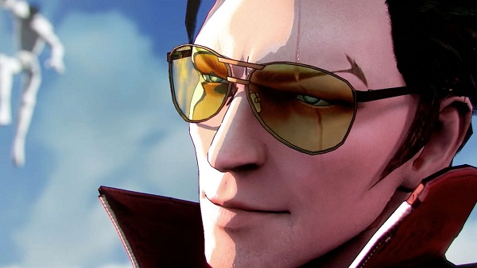

No More Heroes 3 anunciado para Nintendo Switch ¡Nueva locura de Suda 51!
Un espectacular tráiler cinemático en el E3 2019 fija su lanzamiento en 2020.
El veterano Suda 51 ya había dejado clara su intención de desarrollar el ansiado No More Heroes 3, y el creativo japonés ha aprovechado el Nintendo Direct del E3 2019 para presentar de forma oficial este ansiado videojuego de acción. Lo ha hecho con un espectacular tráiler cinemático que ya deja entrever que el nuevo trabajo de Grasshopper Manufacture será fiel a las entregas originales de No More Heroes.
Con una fecha de lanzamiento prevista para el próximo año 2020 en Nintendo Switch, la nueva aventura de acción protagonizada por Travis Touchdown será un videojuego tradicional en el sentido de apostar por todo aquello que hizo grandes a las entregas originales, dejando de lado el carácter más experimental de Travis Strikes Again: No More Heroes, estrenado en el mercado hace tan solo unos meses.
Takagi Show
@Takagi Show desde mi casa 2019-2019 Todos los derechos reservados SOBRE TAKAGI SHOW